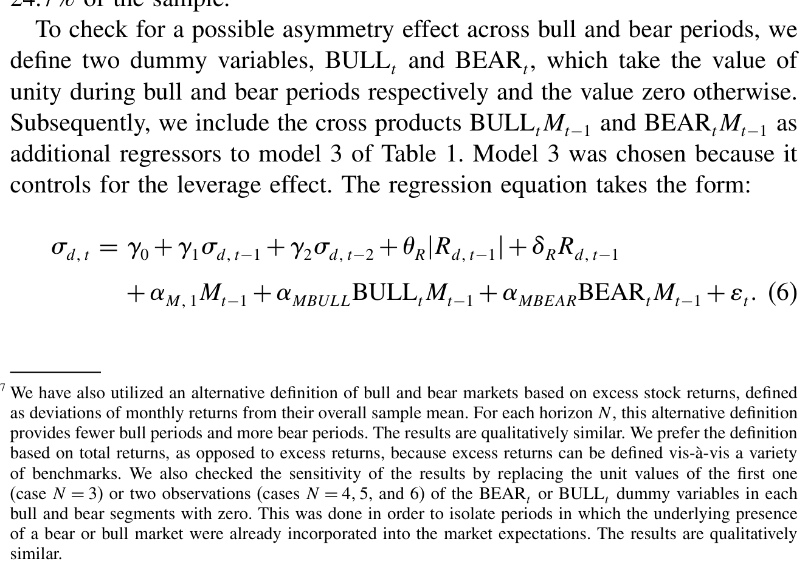
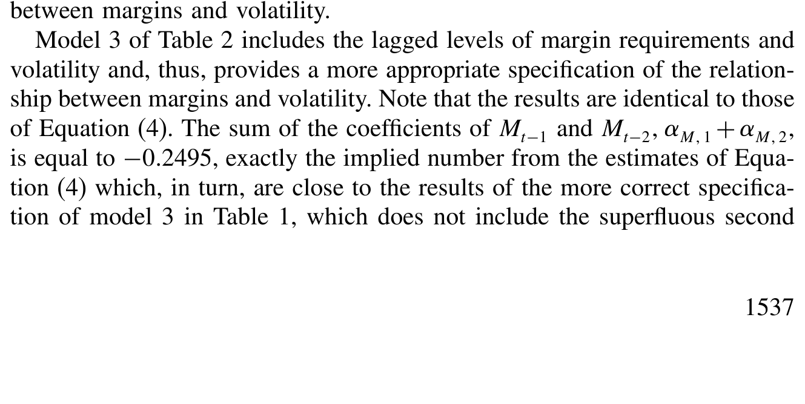
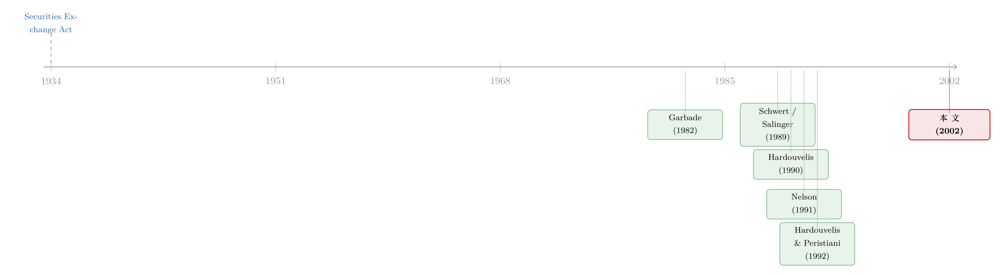

保证金这味药，牛市治病、熊市却伤身
本文读的是 Hardouvelis & Theodossiou (2002, Review of Financial Studies)：初始保证金 (initial margin requirement) 越高，随后的股市波动率确实越低——但这只在常态和牛市里成立，到了熊市，这层关系就消失了。作者由此给出一条审慎的监管法则：市场急跌时该调低保证金以保住流动性、避免「去金字塔」式的连环踩踏，等风浪过去再调高并维持在高位，以防下一轮泡沫的「金字塔」越垒越高。
1 一个七十年的老问题
1929 年的崩盘和 1987 年的崩盘，隔了将近一甲子，却像照镜子一样长得相似：两次都发生在投资者「几乎不花自己的钱」就能持有大量股票的年代。1929 年根本没有保证金管制；到了 1980、90 年代，现金市场的保证金虽在，却被 S&P 500 的期货、期权绕了过去——危机当口，那些期货合约的保证金大约只有合约价值的 5%。于是那个被问了七十年的问题，又一次被摆上桌面：
低保证金，到底会不会抬高系统性风险，把股价推到经济基本面撑不起的高度，从而让整个市场更容易崩？
这个问题之所以难，是因为「脆弱」(fragility) 这个东西本身就难以度量。我们事后能看到的，只是市场实际「翻腾」(turbulence) 得有多厉害；可事前的脆弱性说的是崩盘发生的概率，而不是崩盘有没有真的发生。Hardouvelis (1990) 当年用了三把尺子去量它——年度与月度波动率、不同期限上的过度波动、以及股价的均值回归——结论是：保证金和这三种脆弱性度量统统负相关，所以保证金管制是一项审慎之举。
但这个「官方保证金能降低系统性风险」的结论一出来，立刻招来一片质疑。Kupiec (1989)、Schwert (1989)、Salinger (1989)、Hsieh and Miller (1990) 几乎是同时出手，而且不约而同地只盯住三把尺子里的一把——月度波动率。于是原本宏大的「保证金能不能降低市场脆弱性」的命题，被悄悄窄化成了「保证金能不能压低实际波动率」。
这就是本文出发的地方。它要做三件事：把这桩计量官司的对错先讲清楚；用更精细、更高频的数据去重新度量波动；然后，抛出一个此前文献从未碰过的可能性——保证金和波动率的关系，也许是不对称的。
2 先吵起来的，其实是一道计量官司
要理解本文的贡献，得先看懂前人到底在哪儿吵翻了。
首先，是一个关于「水平还是差分」的技术问题。批评者（除 Salinger 1989 外）几乎都用一阶差分 (first differences) 的回归来检验保证金对波动率的影响，得出的结论和做水平回归 (in levels) 的 Hardouvelis (1990) 大相径庭。谁对谁错？
接着，一个自然的问题是：保证金这个变量，能不能当成一个有单位根 (unit root) 的随机游走来处理？作者的回答是不能，而且理由很硬：保证金是一个被政策约束在 0 到 1 之间的离散变量，方差有限，从概念上就不可能是随机游走；从操作上看，对它做差分会得到一串几乎全是零、只有 22 个非零点的序列——用这样的变量去解释波动率，等于在检验「每次调保证金那一刻波动率有没有打个嗝」，根本捕捉不到保证金水平与波动率之间的长期关系。
但为了不只是「讲道理」，作者老老实实做了 Dickey-Fuller (1979) 检验。设 \(M_t\) 为月末保证金水平，估计
$$\Delta M_t = a_0 + b_1 M_{t-1} + a_1 \Delta M_{t-1} + \cdots + a_k \Delta M_{t-k} + e_{m,t}$$
零假设是 \(b_1 = 0\)（存在单位根）。结果 \(b_1 = -0.0366\)，t 值 −3.81，大于 5% 临界值 −2.86，单位根假设被拒绝。波动率序列也做了同样的检验，
$$\Delta \sigma_{d,t} = a_0 + b_1 \sigma_{d,t-1} + a_1 \Delta \sigma_{d,t-1} + \cdots + a_k \Delta \sigma_{d,t-k} + e_{s,t}$$
在 \(k=2,6,12\) 三个滞后阶下，\(b_1\) 分别为 −0.32 (−6.32)、−0.23 (−4.29)、−0.21 (−3.71)，单位根被「干净利落地」拒绝。
两个序列都没有单位根，这意味着用水平形式把二者联系起来才是正确的设定。当然，作者也很坦白：保证金序列的「近似单位根」行为，加上波动率本身很强的序列相关，确实可能制造 Granger and Newbold (1974) 笔下的「伪回归」(spurious regression)。这正是当年批评者改用差分的动机。但本文用 10,000 次自助法 (bootstrap) 模拟在「保证金与波动率无关」的零假设下重新估计，发现水平回归里这种伪回归偏误既不在统计上、也不在经济上显著——而一旦改成差分，反倒会把系数解读引向歧途。
这里藏着本文一个容易被忽略的细节：自助法不仅用来挤出偏误，还顺手戳穿了 OLS 的 t 统计量。在 Model 1 里，保证金系数的 t 值是 −4.42，按教科书早就「极其显著」了；可零假设下模拟出的 t 分布，其 2.5% 下侧分位点竟在 −4.60——也就是说，这个 −4.42 在双侧 5% 水平上并不显著，只在 10% 水平上勉强成立。问题不在偏误，在序列相关引起的推断失真。
3 真正关键的一步：把「对称」换成「不对称」
到这里，文章其实还在前人的赛道上跑。真正让它与众不同的，是第三个动机——不对称。
这个想法其实非常符合直觉，却偏偏从没人正经检验过。高保证金在常态下扮演的是「预防」角色：它让乐观的投机者借不到那么多钱，把价格抬不到离谱的高度，从而压低未来崩盘的概率。但一旦真正的崩盘已经发生，高保证金就可能从「良药」变成「毒药」——它收紧了流动性，逼着拿不出追加保证金的人被迫平仓，反而加剧了正在进行的踩踏。
换句话说，国会七十年前设想的那个「金字塔—去金字塔」(pyramiding–depyramiding) 过程，本身就是不对称的：审慎的保证金管制是用来防住牛市的过度膨胀（防「垒金字塔」），而不是用来抚平崩盘冲击的（防「拆金字塔」）。Federal Reserve 自己的历史决策也印证了这一点——它在牛市里调高保证金以遏制过热，却只是为了抵消之前的上调而调低保证金，从来没把降保证金当成救市的工具。
于是问题就清楚了：如果保证金的角色在牛、常、熊三种状态下根本不同，那么用一个对称的线性模型去估计它，得到的不过是三种效应被强行平均后的一团糨糊。
先看线性框架能走多远。本文的基准回归（Table 1）形如：
这里 \(\sigma_{d,t}\) 是本文一个很讲究的波动率代理——当月日收益率的标准差，逐月采样、构造上不重叠，因而不像前人用滚动窗口或单月收益绝对值那样人为制造出序列相关。\(|R_{d,t-1}|\) 是上月的波动冲击，\(\gamma_R R_{d,t-1}\) 用来控制所谓的「杠杆效应」(leverage effect)。
关键就是那个交叉项 \(\gamma_{RM}\, R_{d,t-1} M_{t-1}\)：它让保证金对波动率的边际效应，可以随市场是涨是跌而改变。这是把「不对称」塞进线性世界的第一次尝试。
不过线性交叉项终究太粗。要让牛、常、熊三种状态各自说话，需要一个能内生地刻画波动率「随冲击方向不同而不同」的模型。这就引出了第二节的非线性框架——基于 Nelson (1991) 的指数 GARCH-in-mean (EGARCH-M) 模型。EGARCH 的妙处在于，它对条件波动率取对数后建模，天然允许正负冲击对波动率产生不对称的影响（这正是 Black 1976 以来反复出现的「坏消息比好消息更搅动市场」的现象），因而是检验保证金不对称效应的天然候选。作者把它在日、周、月三个频率上分别估计，并据此把样本切成牛市、常态、熊市三类时期来比较。
下面这张表给出了划分这些时期后的描述统计，是后续不对称结论的事实基础。

Table 3: presents some descriptive statistics for these periods. In the case
4 主要结果：牛市治病，熊市失灵
把所有线索拢到一起，结论就浮现出来了。
先说线性回归（Table 1，样本为 1934 年 10 月至 1987 年 12 月，636 个月度观测，\(\sigma_{d,t}\) 均值 0.8161%、\(M_t\) 均值 0.5873）。最朴素的 Model 1 里，保证金系数 $-0.563$，意味着保证金从 0.5 升到 0.6，波动率下降 0.0563、约 5.63 个基点——方向和早期文献一致。但前面说了，这个系数的显著性经不起自助法的推敲。加入波动率滞后项后的 Model 2，保证金系数缩到 $-0.1823$，可由于自回归项的存在，长期累积效应 \(\theta_M/(1-\beta_1-\beta_2) = -0.1823/(1-0.4048-0.1772) = -0.4361\)，又回到了和 Model 1 的 $-0.563$ 相去不远的水平。等到加入交叉项的完整 Model 5，保证金主效应 $-0.2247$（t 值 −2.11，5% 显著），\(R^2\) 达到 0.3638。
但线性模型只能讲到这儿。真正的反转出现在非线性的 EGARCH-M 估计里（Table 2）：

Table 2: presents regression estimates for special cases of Equation (5)
把样本按牛、常、熊三态拆开后，保证金与波动率的负相关，只存在于常态和牛市——保证金越高，随后的波动率确实越低；可一到熊市，这层关系就不见了，系数变得不再显著。这恰好印证了第 3 节那个直觉：高保证金是防患于未然的预防针，对正在下跌、流动性正在枯竭的市场，它早已无能为力，甚至可能添乱。
这一发现的政策含义是反直觉却又自洽的：监管者不该在崩盘时维持高保证金（那只会逼出更多被迫平仓、加深「去金字塔」），而应当临时调低它来托住流动性；风浪平息后，再把它升回并维持在高位，以防下一轮牛市把「金字塔」越垒越高。关于市场急跌时流动性如何瞬间蒸发、被迫抛售如何自我强化，可参见《差点死掉的那个市场：一场公司债流动性危机的微观解剖》。
5 一个意外的副产品：保证金压住了「要求回报」
文章还有一个容易被主线盖过、却很漂亮的发现：保证金不仅和波动率负相关，还和股票收益的条件均值负相关。
这看起来像个悖论——更高的保证金怎么会对应更低的预期收益？作者的解释是：因为高保证金降低了系统性风险。既然市场被「金字塔—去金字塔」式崩盘拖垮的概率下降了，投资者要求的风险补偿自然也随之下降。于是保证金通过抑制系统性风险这条渠道，同时压低了波动率和要求回报。这把「保证金管制究竟有没有用」的争论，从单纯的波动率之争，重新拉回到了 Hardouvelis (1990) 最初关心的那个更大的问题——市场脆弱性——上来。
6 文献脉络
这条研究的源头，是 1934 年的《证券交易法》(Securities and Exchange Act)：国会担心信贷驱动的投机会通过「金字塔—去金字塔」过程放大价格波动，于是首次授权管制保证金。Garbade (1982) 把这套机制讲成了一个清晰的监管故事。
真正把它做成实证的，是 Hardouvelis (1990) 那篇 AER：用水平回归发现保证金与多种市场脆弱性度量负相关。这个结论旋即引爆了一场论战——Kupiec (1989)、Schwert (1989)、Salinger (1989)、Hsieh and Miller (1990) 纷纷用一阶差分、月末数据提出反驳，把战场收窄到了月度波动率上。与此同时，Hardouvelis and Peristiani (1992) 把同样的检验搬到了日本市场。
另一条暗线来自计量工具的进步：Nelson (1991) 提出的 EGARCH，第一次让条件波动率模型能够干净地刻画正负冲击的不对称影响。本文正是站在这两条线的交汇处——既用更高频、更精细的波动率度量回应了那场旧官司，又借 EGARCH-M 把一个从未被检验的「牛熊不对称」假说做实。

评论与延伸（Q&A + 研究方向）
Q：保证金序列在样本里只变了 22 次，几乎是常数，怎么还能识别出它对波动率的影响？
这正是本文方法论的要害。识别靠的不是「频繁变动」，而是水平上的长期共动：在保证金维持某一水平的较长区间里，波动率的平均高度是否系统性地不同。作者用单位根检验论证了两个序列都平稳、因而水平回归成立，再用 10,000 次自助法证明伪回归偏误既不统计显著也不经济显著。反过来，对一个几乎不变的序列做差分，只会得到一串零，把信息全部丢掉。
Q：既然 OLS 的 t 值不可信，那本文凭什么相信自己的显著性？
关键就在于它不依赖 OLS 的渐近 t 分布，而是用自助法在零假设下重新生成系数和 t 统计量的经验分布。Model 1 里
−4.42的 t 值之所以「掉链子」，是因为零假设下 t 分布的 2.5% 分位点被序列相关推到了−4.60。换言之，本文把推断标准建立在模拟出来的真实分布上，而非教科书假设的±1.96。
Q：「不对称」会不会只是杠杆效应（leverage effect）的另一种说法？
不是。杠杆效应说的是收益的正负冲击对波动率的不对称影响，本文回归里专门用 \(\gamma_R R_{d,t-1}\) 去控制它。本文讲的不对称是保证金这个政策变量的效应随牛/熊状态而变——是「同一剂保证金在不同市场状态下药效不同」，两件事在模型里是分开的。
Q：保证金和收益均值负相关，会不会只是反向因果——是高波动的年代里美联储恰好调高了保证金？
这是最值得担心的内生性。美联储确实在「看到过度投机迹象」时上调保证金，所以保证金水平本身是对市场状态的反应。本文用的是滞后的保证金 \(M_{t-1}\) 去解释当期波动率，部分缓解了同期反向因果，但无法完全排除「美联储的前瞻性反应函数」带来的偏误——这也是后文我最想看到改进的地方。
Q：1974 年以后保证金一直是 50%，本文的结论还有现实意义吗？
有，但要小心。本文样本的识别力主要来自 1934–1974 年那 22 次变动；1974 年后保证金冻结，意味着用现金市场保证金做政策实验的空间已经关闭。不过文章开头点出的关键是：1980、90 年代真正的低保证金藏在期货和期权里（崩盘时约 5%），所以政策含义其实指向衍生品保证金，而非现金市场那个纹丝不动的 50%。
Q：把「系统性风险下降」当作收益均值下降的解释，会不会过强？
这是一个合理但未被结构化检验的「故事」。文章给出的是一个简约式(reduced-form) 的负相关，再用系统性风险去解释它，但并没有一个把保证金、崩盘概率、风险溢价三者串起来的结构模型来直接量化这条渠道。这是它在机制上留下的开口。
几个可能的研究问题与提案
(1) 把不对称检验搬到公司债与信用市场的「保证金/折扣率」上。 - 【经济故事】回购市场 (repo) 和衍生品清算中的 haircut，本质上就是债市版的保证金。如果 Hardouvelis–Theodossiou 的不对称在股市成立，那么信用利差的波动是否也对 haircut 的提高「牛市有效、熊市失灵」？2008 和 2020 年的「haircut 螺旋」正是熊市里调高保证金加剧踩踏的活样本。 - 【可行性】中。数据可用（TRACE 成交、回购利率、清算所 haircut 公告），识别可借鉴本文的状态划分 + 滞后水平回归；难点在 haircut 数据的可得性与频率，且需处理 haircut 与利差的双向因果。
(2) 外资持有比例与保证金政策的交互。 - 【经济故事】外资在崩盘时往往跑得更快（fire-sale 的边际卖方）。如果高保证金在熊市里加剧被迫平仓，那么外资持有比例更高的市场，是否对保证金的「熊市毒性」更敏感？这能把本文的单一市场结论推广成一个跨国横截面。 - 【可行性】中。可用跨国保证金/初始证据金数据 + 外资持股数据（如各国托管数据），用 EGARCH-M 的状态划分做面板。挑战在于各国保证金制度异质、政策变动稀疏。
(3) 用 EGARCH-M 的状态划分重估「调低保证金救市」的反事实福利。 - 【经济故事】本文给了方向性结论（熊市该降），但没算过「降多少、何时降」的最优路径。把保证金内生进一个带流动性约束的资产定价模型，可以量化逆周期保证金规则相对于固定 50% 的福利改善。 - 【可行性】低到中。需要结构模型 + 校准，identification 主要靠模型设定而非自然实验，更偏理论；好处是能直接对话本文的政策建议。
(4) 高频化：日内保证金追缴与瞬时波动的不对称。 - 【经济故事】现代清算所是日内（甚至盘中）追保的。本文用的是月度日波动率；若把分析推到日内，能直接观察「追保—平仓—再追保」的去金字塔链条在分钟级别如何展开。 - 【可行性】中到高。日内数据充足（限价订单簿、清算所盘中追保记录较难但部分可得），可用已实现波动率替代 EGARCH 的潜变量。难点是追保事件的精确时点数据。
参考文献
- Garbade, K. D. (1982). Federal Reserve Margin Requirements: A Regulatory Initiative to Inhibit Speculative Bubbles. In P. Wachtel (ed.), Crises in Economic and Financial Structure. Lexington Books.
- Hardouvelis, G. A. (1990). Margin Requirements, Volatility, and the Transitory Component of Stock Prices. American Economic Review 80, 736–762.
- Hardouvelis, G. A., & Peristiani, S. (1992). Margin Requirements, Speculative Trading and Stock Price Fluctuations: The Case of Japan. Quarterly Journal of Economics 107, 1333–1370.
- Hardouvelis, G. A., & Theodossiou, P. (2002). The Asymmetric Relation Between Initial Margin Requirements and Stock Market Volatility Across Bull and Bear Markets. Review of Financial Studies 15(5), 1525–1559.
- Hsieh, D. A., & Miller, M. H. (1990). Margin Regulation and Stock Market Volatility. Journal of Finance 45, 3–29.
- Kupiec, P. H. (1989). Initial Margin Requirements and Stock Returns Volatility: Another Look. Journal of Financial Services Research 3, 287–301.
- Nelson, D. B. (1991). Conditional Heteroskedasticity in Asset Returns: A New Approach. Econometrica 59, 347–370.
- Salinger, M. A. (1989). Stock Market Margin Requirements and Volatility: Implications for Regulation of Stock Index Futures. Journal of Financial Services Research 3, 121–138.
- Schwert, G. W. (1989). Margin Requirements and Stock Volatility. Journal of Financial Services Research 3, 153–164.
- Granger, C. W. J., & Newbold, P. (1974). Spurious Regressions in Econometrics. Journal of Econometrics 2, 111–120.
- Dickey, D., & Fuller, W. A. (1979). Distribution of the Estimators for Time-Series Regressions with a Unit Root. Journal of the American Statistical Association 74, 427–431.
- Black, F. (1976). Studies of Stock Market Volatility Changes. 1976 Proceedings of the American Statistical Association, Business and Economics Statistics Section, 177–181.